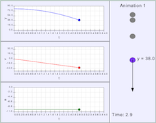

EjsS Physlets® are JavaScript adaptations of Physlet curricular material developed using version 5 of the Easy Java/JavaScript Simulations (EjsS) authoring and modeling tool. The problems in this package are adapted from Chapter 2 of Java applet version of Physlet Physics by Wolfgang Christian and Mario Belloni available on the Open Source Physics website.
EjsS Physlets® Illustrations in this package are designed to demonstrate physical concepts. Students need to interact with the Physlet, but the answers to the questions posed in the Illustration are given or are easily determined from interacting with it. Many Illustrations provide examples of physics applications. Other Illustrations are designed to introduce a particular concept or analytical tool. Typical uses of Illustrations would include "reading" assignments prior to class and classroom demonstrations.
Additional EjsS models can be found by searching for the expression "JS Models" on the Open Source Physics website.

Motion along a straight line, also called one-dimensional motion, can be represented in a number of different ways: as a formula, as a graph, as data in a table, or as an animation. All four representations are useful for problem solving.
The study of motion in one, two, or three dimensions
is called kinematics. What distinguishes kinematics from the techniques which we will consider later
is that, at the moment, we do not care why an object is moving the way it
is. We just care that it is moving the way described. Do not think that
this degrades the study of kinematics. The exact opposite is true. Kinematics is powerful precisely because it is independent of the cause of the
motion. We will learn to speak using the common language for
describing motion irrespective of the cause.
Physlets® were developed at Davidson
College by Wolfgang Christian.